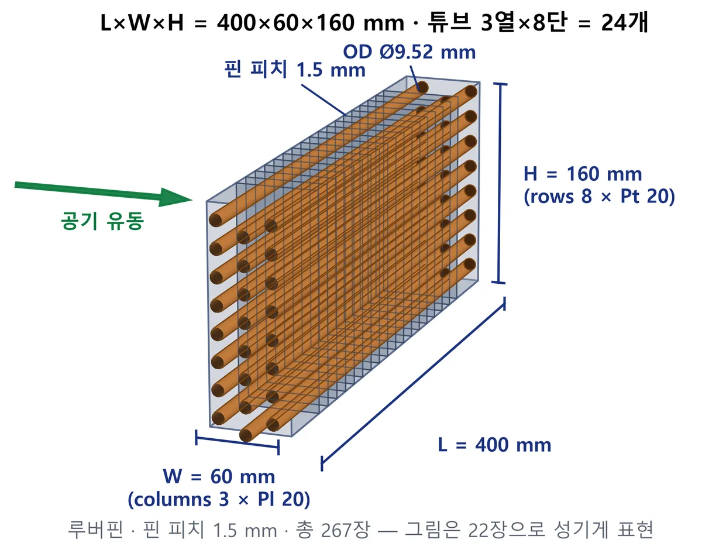
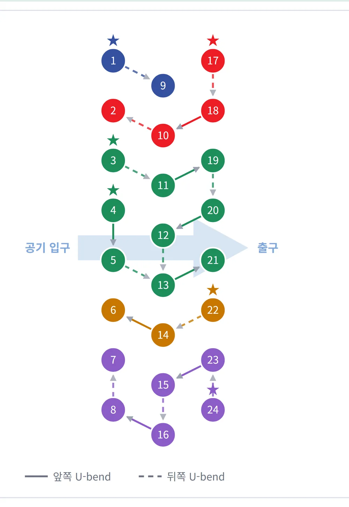
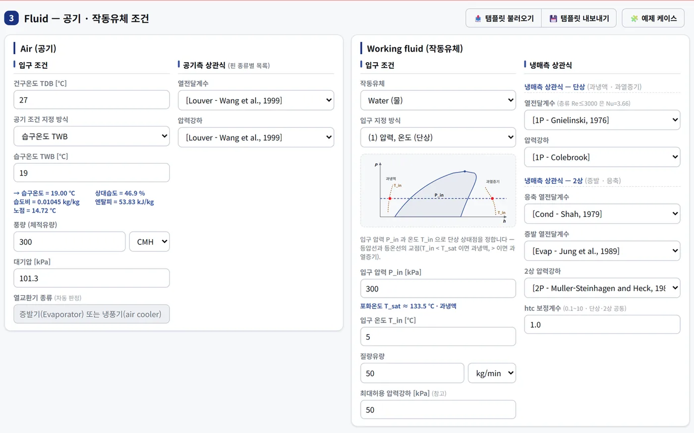
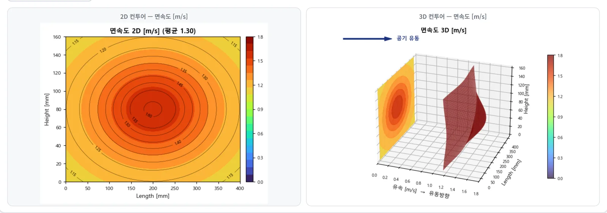
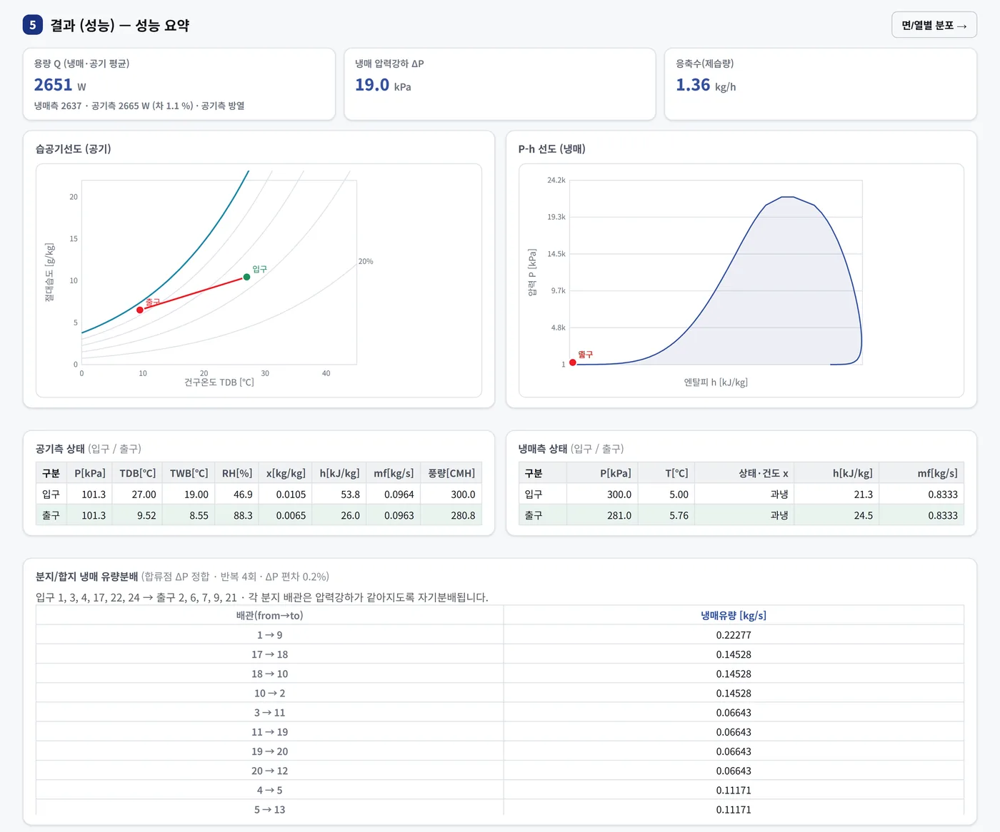
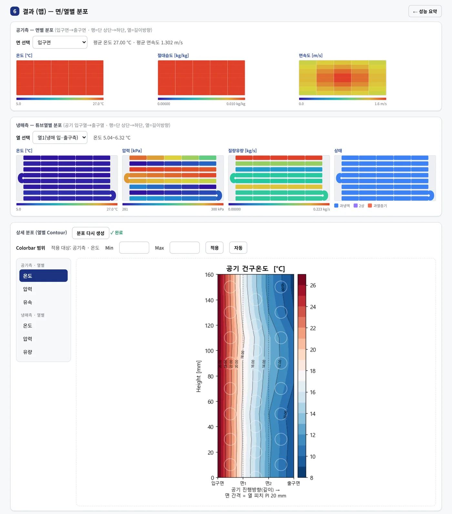
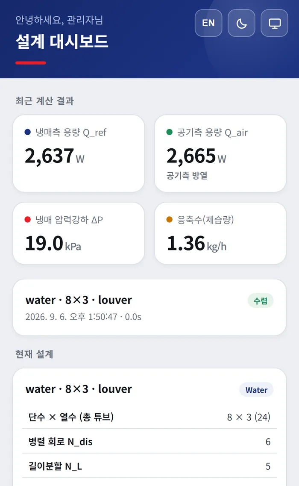

설계는 자유롭게, 결과는 직관적으로.
형상 · 냉매회로 · 운전조건 입력→용량 · 압력강하 · 제습량 산출
정해진 템플릿에 형상을 맞추는 대신 원하는 회로를 그려놓고 그 회로 그대로 계산합니다. 용량·압력강하·제습량부터 면·열별 분포까지 한 화면에서 확인하며, 설치 절차 없이 웹 브라우저에서 바로 사용합니다.
한국기계연구원 히트펌프연구센터 개발 · 설계·해석·연구·교육 목적으로 이용하실 수 있습니다.
자연냉매 · 공기 포함
물 · R134a · R1234yf · R410A
평판핀 8 · 루버핀 5
셀별 국소 상태 산출
Workflow
여섯 단계로 끝나는 설계 검토
화면 왼쪽 순서대로 진행하면 형상 입력에서 분포 해석까지 이어집니다.
형상 입력
튜브·핀 형상
열수·단수·피치
냉매 회로
배관 드래그
분지·합지
유체 조건
공기 입구상태
작동유체 58종
풍량 분포
팬 비균일
2D·3D 프리뷰
성능요약
용량·압력강하
선도·상태표
분포맵
면별·열별
분포 컬러맵
Features
설계는 자유롭게,
결과는 직관적으로.
정해진 회로 템플릿에 형상을 맞추는 대신, 원하는 회로를 그려놓고 그 결과를 봅니다.
형상 입력 — 치수를 넣으면 3D로 즉시 확인
- 튜브 길이·열수·단수·피치·외경을 넣으면 3D 형상이 곧바로 갱신됩니다.
- 실제 치수 비율로 렌더링하고 L·W·H·OD·핀피치를 치수선으로 함께 표시합니다.
- 엇갈림 배열과 관 단면(내경)까지 그려 배관 배열을 눈으로 확인합니다.
- 평판핀·루버핀을 고르면 루버 치수(Lp·Lh)와 해당 상관식이 함께 나타납니다.

냉매 회로 — 드래그로 그린다
- 튜브를 드래그해 배관을 연결하고, 분지(split)·합지(merge)를 임의로 구성합니다.
- 전 튜브 1회 포함·순환 발생 여부를 실시간으로 검증합니다.
- 연결하지 않은 튜브는 독립 1튜브 회로로 자동 처리합니다.
- 유량 분배는 ΔP 균일화(반복 자기분배) 또는 균등 분배 중 선택합니다.

유체 조건 — 작동유체 58종
- 공기 입구상태는 건구온도에 습구온도·상대습도·절대습도·엔탈피·노점 중 하나를 더해 지정합니다.
- 작동유체는 58종(물·공기·R717·R744·R290·R410A·R134a·R1234yf 등)에서 고릅니다 — 물성은 CoolProp 기반입니다.
- 냉매 입구는 물 조건, 직접 지정(압력 + 온도 또는 건도), 증발기 모드(응축기 출구 기준) 중에서 정합니다.
- 단상·2상 열전달과 압력강하 상관식을 각각 선택합니다.

풍량 분포 — 팬 비균일 반영
- 중앙은 강하고 가장자리는 약한 실제 팬 토출 분포를 반영합니다.
- 입구면 셀별로 공기 조건을 차등 적용합니다.
- 2D·3D 프리뷰로 분포를 확인한 뒤 계산에 넣습니다.

성능 요약 — 격자 단위 예측
- 높이·깊이·길이 3방향으로 격자를 분할해 셀별로 해석합니다.
- 셀별 국소 열전달과 압력강하를 각각 계산합니다.
- 습표면 조건에서 응축수(제습량)를 산출합니다.
- 결과는 습공기선도·P-h 선도와 회로별 유량 분배로 함께 제시됩니다.

분포맵 — 면·열별 컬러맵
- 공기 입구면에서 출구면까지, 냉매 열별 분포를 표시합니다.
- 온도·유량·상태량을 색으로 구분해 성능 취약 구간을 즉시 식별합니다.
- 면별·열별을 골라 보고, 상세 분포는 컨투어로 다시 그립니다.

Mobile
현장에서는 운전조건만 바꿔 계산
휴대폰 전용 화면에서 케이스를 고르고 운전조건·냉매 분배방식·풍량 분포만 수정해 바로 계산합니다. 데스크톱과 같은 계산 엔진을 그대로 쓰므로 결과가 다르지 않습니다. 홈 화면에 추가하면 주소창 없이 앱처럼 열립니다.
형상 편집·면별 분포·엑셀 내보내기는 데스크톱 화면에서 제공합니다.

Specification
계산 · 입출력 사양
v1.0 기준입니다.
| 작동유체 |
58종 — 물 · 공기 · R717(암모니아) · R744(CO2) · R290 · R410A · R134a · R1234yf 등
CoolProp 물성 기반 |
|---|---|
| 공기측 |
열전달 상관식 13종(평판핀 8 · 루버핀 5) · 압력강하 상관식 11종 — 선택 계산
건표면 / 습표면(응축수 산출) · 팬 비균일 풍량 분포 · 접촉 열저항 반영 |
| 관내측 | 단상 열전달·마찰 상관식, 2상 응축·증발 열전달 및 압력강하 상관식 선택 |
| 회로 |
드래그 편집 · 분지(split) / 합지(merge) · 회로별 튜브수 불균등 허용
미연결 튜브는 독립 1튜브 회로로 자동 처리 유량 분배: ΔP 균일화(반복 자기분배) 또는 균등 분배 |
| 냉매 입구 지정 | 물 조건 · 직접(압력 + 온도 또는 건도) · 증발기 모드(응축기 출구 기준) |
| 결과 | 용량 Q · 압력강하 ΔP · 응축수 · 공기/냉매 입출구 상태 · 습공기선도 · P-h 선도 · 면별/열별 분포 컬러맵 |
| 파일 |
엑셀 설계템플릿 불러오기 / 결과 내보내기(형상·회로도·조건·셀별 원자료)
불러오면 결과까지 복원 |
| 실행환경 | 웹 브라우저(무설치) · 모바일 전용 화면 · 라이트 / 다크 화면 전환 · 한국어 / English |
| Sizing | 목표 부하로부터 형상 후보 산출개발 중 |
Validation
자체 실험 124 케이스로 대조했습니다
계산값을 실험값과 맞춰본 범위를 그대로 공개합니다.
- 42물평판핀 / 루버핀 · 3~20열
- 39R134a응축·증발 2상 조건 포함
- 27R410A고압 냉매 조건
- 16R1234yf저GWP 냉매
공기측 상관식 원논문 대조
구현된 공기측 열전달·압력강하 상관식을 원논문의 정의식과 하나씩 대조해 기준면적·수력직경·물성 기준을 맞췄습니다.
실험 기간
2023–2026년 히트펌프연구센터 열교환기 시험설비에서 수행한 자체 실험 데이터입니다.
For
이런 분께 도움이 됩니다
열교환기 설계·해석 담당
보유 형상의 성능을 먼저 예측해 보고, 회로 배열 대안을 비교해 설계를 좁힙니다.
히트펌프·공조기기 개발
냉매·운전조건을 바꿔가며 코일 성능이 어떻게 변하는지 빠르게 확인합니다.
시험평가·성능검증
보유 시험데이터와 계산값을 비교해 시험 결과를 해석하는 근거로 씁니다.
대학 연구실·교육
회로 구성이 성능에 미치는 영향을 화면에서 직접 보여주는 교육 도구로 활용합니다.
Contact
접속주소·계정 발급 문의
소속 · 담당 업무 · 사용 목적을 적어 보내주시면 계정을 발급해 드립니다. 발급 즉시 브라우저로 접속하실 수 있고, 설치 절차는 없습니다.
함께 할 수 있는 일
성능 예측 검토
보유 열교환기 형상의 성능을 예측하고 결과를 함께 해석합니다.
설계 개선
회로 배열 대안을 비교해 개선 방향을 찾습니다.
시험데이터 비교
기업 보유 시험데이터와의 비교·해석을 지원합니다.
공동연구 · 기술이전
기능 확장과 협력 방안을 협의합니다.